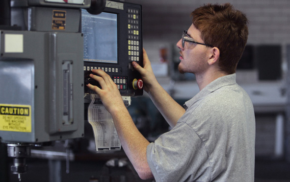

Although there are multiple CNC machine controls in use in cnc machine workshops like Fanuc, Haas CNC, Siemens Sinumerik etc.
But for beginner level cnc machinists it is better to understand and start learning a cnc machine controls which is most widely used and understood, and almost every other cnc control has some similarities with such cnc controls.
So Fanuc CNC controls has all such properties.
Very simple to program, learn and understand.

How to Make CNC Program
“How to Make CNC Program – CNC Machining for Beginners Series” is one of the articles for beginner level cnc machinists who just started to learn and understand cnc programming / cnc machining.
More such articles and tutorials will be added in future.
HelmanCNC.com has many such tutorials and program examples.
How to make CNC program is not a job with you can learn in one or two days. To completely understand the working of G-codes and tool paths will take some time.
Patience and Practice is the key to better understand and learn how to make cnc program.
Here is an article chosen for cnc programmers/machinists who just started their journey of CNC machining.
Very easy to understand article, which tells how a cnc program can be made for cnc lathe machines.
CNC Programming for CNC Machinists
Below are some program examples which help you to better understand cnc program layout.
CNC Lathe
Lathe CNC Programming Example
CNC Programming for Beginners a Simple CNC Programming Example
Fanuc G21 Measuring in Millimeter with CNC Lathe Programming Example
Chamfer and Radius Program Example with G01
CNC Milling
CNC Milling Machine Programming Example for Beginners
Slot Milling a Sample CNC Program Example
CNC Milling Sample Program